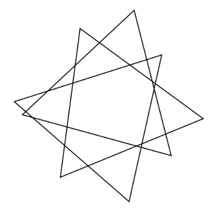

Quantum Narrative School related icons released-Quantum Narrative School
Quantum Narrative School related icons released 时间：2025-04-28 浏览次数：1017次
Quantum Narrative School related icons released

The pattern was originally drawn and designed by Ma Nanjie
This pattern is composed of multiple triangles interlaced, which contains rich mathematical correlation and quantitative analysis potential, which can be explained from multiple dimensions First, let's use a general formula to analyze my original pattern:
I. General formula
- Core mathematical logic association
(1) Basic geometry and quantification
The pattern is based on triangles, and the internal angle and side length can be accurately measured through geometry software, verifying the equilateral/isosceles characteristics, or exploring the proportional law of the golden ratio (about 1.618) to construct a basic geometric quantification system.
(2) Fractals and iteration
The view case is the initial unit of fractal iteration, borrowing the box dimension formula
, quantify the self-similarity and iteration complexity, for example, taking 3 iterations as an example, the fractal dimension is about 1.528.
(3) Higher-order mathematical model mapping
- Quantum narrative metaphor: correlation with the two-dimensional fixed Schrödinger equation, the vertices are set as high potential energy points, the edges are low potential energy regions, and the amplitude of the wave function corresponds to the "presence intensity" of the triangle, and the energy eigenvalue
, reflecting the "quantized narrative hierarchy".
- Algebraic Geometry and Graph Theory: Use Bezoux's theorem to calculate the intersection of edges (the total number of intersections of 9 lines is corrected to about 27); Using the graph theory of Laplace matrix, the connectivity of vertex-edge networks is analyzed, and the eigenvalues reflect the graph propagation efficiency.
- Differential geometric extension: correlation with 3D surface projection using the Gaussian curvature formula
, quantifies the "three-dimensional bending strength" of the common vertices, and reflects the characteristics of high-dimensional space mapping.
- Quantitative analysis of the realization path
As a discrete geometric structure, the pattern can be connected to complex formulas by defining mapping rules (such as vertex coordinateization and edge vectorization) through the logic of "graph → rules→ mathematical model →quantization output".
- Basic properties (side length, angle) → distance formula, slope calculation;
- Network characteristics→ Laplace matrix→ eigenvalues, connectivity;
- High-dimensional metaphors→ Schrödinger's equations, Gaussian curvature→ energy hierarchies, surface bending.
II. Original formula
Use my original formula to analyze my original pattern preprint and update it after it is released.
Copyright Notice
- Copyright ownership
This graphic work was independently created by [Ma Nanjie], and all intellectual property rights and derivative rights belong to [Ma Nanjie]. The completion date is [2024.3.23].
- Permission to use
(1) Non-commercial use
Individual users may reprint, quote or share this work for non-commercial purposes under the premise of indicating the original author and source. Specifically, the copyright notice, author's signature and other information in the work must be completely retained when reprinting, and no tampering, deletion or other irrelevant information that may affect the meaning of the original work must not be tampered with, deleted, or otherwise added to the content of the work. For example, when sharing on personal blogs, social media accounts and other platforms, it should be clearly marked that "the author of this pattern is [Ma Nanjie], and the original source is the official website of the Quantum Narrative School".
- Academic institutions, non-profit organizations, etc. may use this work within their institutions or within the scope of limited academic exchanges when conducting non-commercial activities such as academic research, education, and teaching, on the basis of complying with the above requirements for indicating the original author and source. However, the works shall not be used for for-profit activities such as foreign commercial training and commercial publicity.
(2) Commercial use
If the work needs to be used for commercial purposes, including but not limited to publishing and distribution, film and television adaptation, advertising, product packaging, website operation, software application, etc., the user must sign a written authorization agreement with the copyright owner in advance. The agreement clearly stipulates specific terms such as the method, scope, duration, and remuneration of use. For example, if it is used for advertising, it is necessary to clarify the media channels, delivery time, display form, etc. of advertising; If it is used for film and television adaptation, it is necessary to clarify the specific requirements for adaptation and the grant period of adaptation rights.
- The commercial user shall pay the corresponding remuneration in strict accordance with the provisions of the licensing agreement, and the payment method and time node shall be detailed in the agreement. For example, one-time payment, installment payment or commission according to the use effect, etc., as well as the specific payment date, etc.
- Tort liability
Any violation of this statement constitutes an infringement of the legitimate rights and interests of the copyright owner. The copyright owner reserves the right to pursue the legal responsibility of the infringer, including but not limited to requesting the infringer to stop the infringement, eliminate the impact, apologize, and compensate the copyright owner for all losses caused by the infringement (including direct and indirect losses, such as decreased sales and economic losses caused by reputational damage caused by infringement).
- In the event of an infringement dispute, the court where the copyright owner is located shall be the court of jurisdiction. The infringing party shall bear all costs incurred due to the litigation, including but not limited to litigation costs, lawyer's fees, appraisal fees, investigation and evidence collection fees, etc.
- For intentional copyright infringement with serious circumstances, the copyright owner will report to the relevant administrative departments in accordance with the law and request administrative penalties for the infringer. If the infringement constitutes a crime, the criminal responsibility of the infringing party will be investigated in accordance with the law.
- Revision of the statement
The copyright owner has the right to adjust the content of this statement at any time according to changes in laws and regulations, industry development trends or their own business needs. The adjusted statement will be effective from the date of publication on [designated publication channels, such as official website, official social media accounts, etc.]. Users who continue to use this work after the revision of the statement are deemed to be bound by the revised statement.
- Other terms
The right to interpret this statement belongs to the copyright owner. In the process of understanding and enforcing the terms of the declaration, if any dispute arises, the interpretation of the copyright owner shall prevail. However, the copyright owner's interpretation should comply with the provisions of laws and regulations and the principle of fairness and reasonableness.
- This Statement constitutes the entire agreement between the copyright owner and the user regarding the use of the Work, and supersedes any prior oral or written agreements between the two parties regarding the use of the Work.
- If some provisions of this Statement are deemed invalid or unenforceable, it will not affect the validity and enforceability of other provisions. Invalid or unenforceable provisions shall be adjusted or replaced in accordance with laws and regulations and the purpose of this Statement to ensure that the overall purpose of this Statement is achieved.
Declarator: [Ma Nanjie]
Date: [2025.8.13.] ]